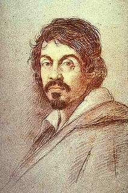
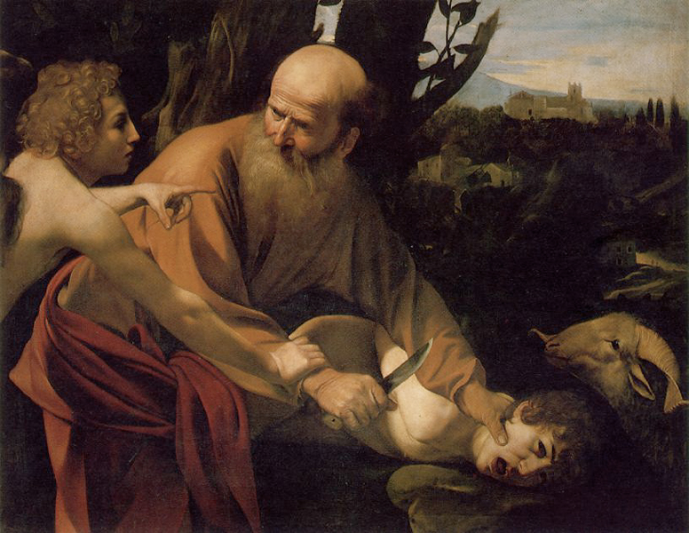

El sacrifici d'Isaac
Galeria
Formulari
Creador
Inici
Descripció
El sacrifici d'Isaac (en italià, Sacrifici d'Isacco) és un quadre de Caravaggio, pintat en 1603 i que es conserva a la Galeria dels Uffizi a Florència. No s'ha de confondre amb el quadre homònim que es troba a la Universitat de Princeton, pintat en 1598. anàlisi És una pintura que en el seu temps va escandalitzar Roma, tot i ser el sacrifici d'Isaac un tema recurrent en l'art del barroc. El problema va consistir en la reacció d'Isaac, que fins llavors havia mostrat una actitud dòcil davant la seva mort, convertint-se en prefiguració de Crist. Però Caravaggio tracta l'assumpte d'una altra manera, ja que Abraham ha de doblegar la resistència del seu plançó. John Murray, col·leccionista anglès, la va vendre a la Galeria dels Uffizi a 1917. La il·luminació del quadre recau sobre la figura d'Isaac, el crit evoca la dramàtica experiència d'altres quadres com Judith i Holofernes i Cap de Medusa.
Autor
Michelangelo Merisi da Caravaggio (Milà, 29 de setembre de 1571-Porto Ércole, 18 de juliol de 1610) va ser un pintor italià actiu a Roma, Nàpols, Malta i Sicília entre els anys de 1593 i 1610. És considerat com el primer gran exponent de la pintura del Barroc.
Retrat de Hans Holbein

Zoom obra
